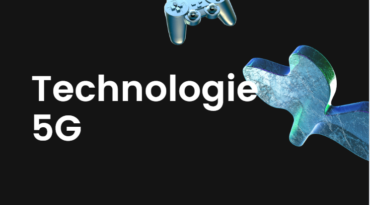
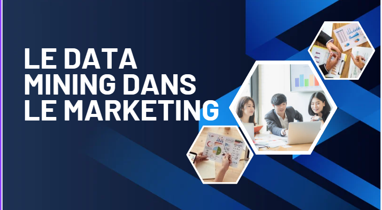

Actuellement en formation en BTS Services Informatiques aux Organisations (SIO), option SLAM,
à l’IPSSI de Paris, cursus que j’ai intégré en octobre 2024 et que je finaliserai par l’obtention
du diplôme en juin 2026, je développe des compétences solides en développement d’applications et en
résolution de problématiques informatiques.
Au cours de ma formation, j’ai travaillé sur plusieurs projets significatifs, notamment AP1 qui consistait à créer une entrepprise fictive,
un TP Librairie consistant à concevoir une application de gestion de bibliothèque avec API, ainsi
que AP2, axé sur l’analyse et la résolution de problématiques techniques. En fin de première année,
j’ai également effectué un stage en tant que Développeuse web chez Yes I Am Free.
À court terme, mon objectif est de consolider mes compétences techniques en développement web en bachelor.
À long terme, je souhaite poursuivre mes études en faisant un Master
spécialisée en data-scientist, afin de me spécialiser dans l’analyse et la valorisation des données, avec pour
ambition d’évoluer.
Application permettant de rechercher des sons et créer une playlist.
Application web pour rechercher et enregistrer des films.
Réseau social pour partager ses rêves.
Application web pour rechercher et enregistrer des livres via l’API Google Books.
Application web d'administration pour la Maison des Ligues de Lorraine pour gérer les réservations et les salles.
Application mobile pour les adhérents de ligues sportives pour réserver des salles.
Réalisation du site Free S-Cool à partir de maquettes. Intégration des pages web en HTML et CSS.
Développement d'une API REST avec Symfony permettant la gestion de tâches. Connexion de l'API avec une interface front-end en React.

La 5G est la cinquième génération de réseaux mobiles : rapidité, faible latence, connectivité massive, mais aussi de nouveaux enjeux de cybersécurité.
Otils de veille : Google Alerts.

Le data-mining est une technique utilisée pour extraire des informations utiles à partir de grandes quantités de données. Dans le marketing, il permet d'analyser les comportements des consommateurs et d'optimiser les campagnes publicitaires.
Otils de veille : Google Alerts.